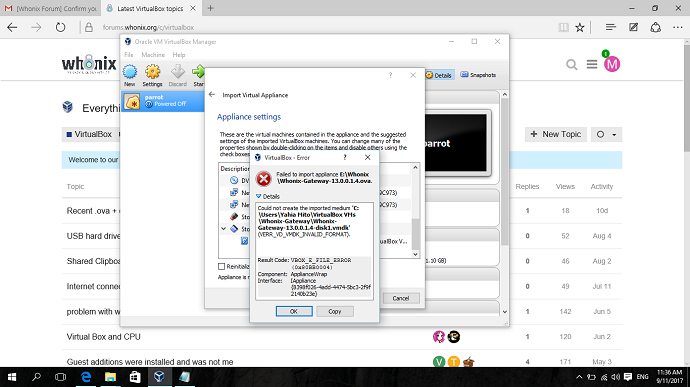

Dear All
I’ve a problem importing appliance to VirtualBox
my hosting machine is windows 10 64bit
my whonix version is Whonix-Gateway-13.0.0.1.4
my virtualbox version is Oracle VirtualBox-5.1.26-117224-Win + Extension Pack Oracle_VM_VirtualBox_Extension_Pack-5.1.26-117224
I tried to import appliance to vbox then I receive an error with code 0x80BB0004 "Could not create the imported medium ‘C:\Users\Yahia Mito\VirtualBox VMs\Whonix-Gateway\Whonix-Gateway-13.0.0.1.4-disk1.vmdk’ (VERR_VD_VMDK_INVALID_FORMAT).
Result Code:
VBOX_E_FILE_ERROR (0x80BB0004)
Component:
ApplianceWrap
Interface:
IAppliance {8398f026-4add-4474-5bc3-2f9f2140b23e}
"
attached is an image of the error result
can you please help!!
